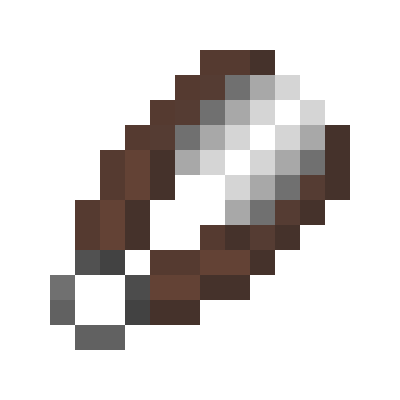

| Mystic Repair Kit |
|  |
| Special Item Untradeable Right-click while holding this item to repair a mystic item. |
Mystic Repair Kits are items in The Pit that can be used on mystic items to repair them.
Mystic Repair Kits can be obtained very rarely as a reward from Auctions. They cannot be traded.
When held and right-clicked, a GUI with every eligible mystic in the player's inventory will be opened. The player can then select a mystic to increase its lives to the maximum amount.
Some items are not repairable:
The repair kit will be consumed on use.
Trivia
Because of the rarity of Mystic Repair Kits, it is typically easier to use the Magnum Opus megastreak to repair mystic items.